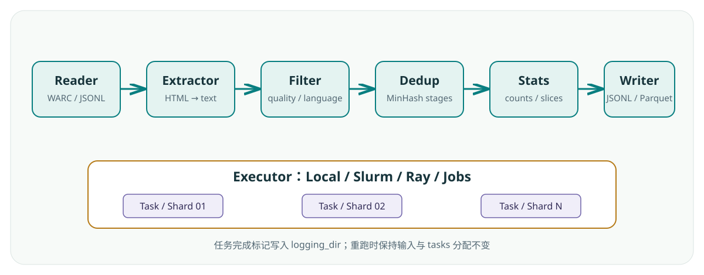

MODULE 23 / LLM DATA ENGINEERING
DataTrove 流水线实战
以 DataTrove v0.10.1 为版本锚点，理解 Document、pipeline block、executor、任务分片和可恢复运行，搭建一条可追踪的离线文本清洗流水线。
本章示例绑定 datatrove==0.10.1（GitHub release 于 2026-09-30 发布），官方项目声明 Python 3.10+。DataTrove API 会随版本变化；复制示例前应核对锁定版本和官方 release，而不是把当前 main 分支的行为当作历史版本承诺。
DataTrove 的核心抽象：Document 流
DataTrove 是用于大规模文本处理、过滤和去重的可组合框架。它把一条流水线拆成若干处理 block：reader 读取数据，extractor 抽取正文，filter 删除不符合规则的文档，stats 收集统计，tokens 处理 token 计数，dedup 执行去重，writer 写出结果。

每个 block 处理统一的 Document 对象，核心字段为 text（文本内容）、id（样本唯一标识）和 metadata（额外元数据字典）。这让不同 reader 和 writer 之间可以用同一种数据契约连接。
安装时把版本和可选依赖写清楚
python -m venv .venv
. .venv/bin/activate
python -m pip install "datatrove[processing,io]==0.10.1"processing extra 提供正文抽取、过滤和 tokenization 相关依赖；io extra 用于 WARC、Parquet 等 I/O 场景。若需要 S3、Ray、推理或其他可选功能，再按 v0.10.1 的 pyproject 配置选择相应 extra。不要为了跑一个 JSONL 过滤例子就默认安装所有依赖。
最小本地流水线
下面示例使用 JSONL 输入、Gopher 质量过滤和 JSONL 输出。它演示的是组件组合，不代表 Gopher 规则适合所有语言或领域；实际阈值与适用语料必须单独验证。
from datatrove.executor import LocalPipelineExecutor
from datatrove.pipeline.filters import GopherQualityFilter
from datatrove.pipeline.readers import JsonlReader
from datatrove.pipeline.writers.jsonl import JsonlWriter
pipeline = [
JsonlReader("data/raw/"),
GopherQualityFilter(),
JsonlWriter(output_folder="data/filtered/"),
]
executor = LocalPipelineExecutor(
pipeline=pipeline,
logging_dir="logs/gopher-filter-v1/",
tasks=8,
workers=4,
)
executor.run()在 v0.10.1 中，GopherQualityFilter() 的默认配置包括最少 50 个词、最多 100,000 个词、平均词长 3–10、至少 2 个 stop words，并默认按英语规则处理。它们是该版本实现的默认值，不是经过你目标语料校准的通用质量阈值；代码、中文、短文本和多语言语料通常需要单独设计过滤器。
本地运行不意味着数据天然可复现。应同时保存输入 manifest、文件 checksum、代码 commit、依赖锁、过滤器参数、任务数、日志目录和输出 checksum。DataTrove 的 completion markers 用于跳过已完成任务；重跑失败任务时不要随意改变任务总数，否则输入文件分配可能改变。
从 Common Crawl WARC 到训练文本
DataTrove v0.10.1 的官方 process_common_crawl_dump.py 示例展示了一条更完整的流程：WarcReader 读取指定 crawl dump，URLFilter 过滤 URL，Trafilatura 抽取正文，LanguageFilter 做语言筛选，再用 GopherRepetitionFilter 和 GopherQualityFilter 处理重复与质量，最后通过 JsonlWriter 写出。示例运行于 Slurm，并将排除样本分别写入独立目录，便于审计。
这是一份官方示例的组件顺序，不是对任意 Common Crawl snapshot 的通用最优 recipe。URL 过滤、正文抽取器、语言识别模型和质量规则都需要按语言、来源和目标任务做抽样校准。
MinHash 去重为什么是多阶段作业
DataTrove 官方 MinHash 示例将去重拆成签名、分桶、聚类和过滤四个阶段：先为文档计算签名；再根据 bucket 找到候选相似对；随后构造重复簇；最后重新读取原始数据，按重复 ID 过滤并输出。这个结构避免把全部文档两两比较，但近似候选仍需理解其哈希、分桶和阈值参数。
生产运行前的检查表
- 锁定 DataTrove release、Python 版本、extras 和 tokenizer / language model 版本。
- 检查每个输入文件是否能被独立处理；官方文档提醒，一个文件通常由一个 task 处理，单个超大文件可能限制并行度。
- 任务数不应盲目超过文件数；同时评估每个 task 的数据量、内存、失败重试成本和日志空间。
- 将排除样本、运行日志、统计指标和最终产物分目录保存。
- 定义幂等写出策略，防止重跑造成重复输出或覆盖已有产物。
- 报告每阶段输入/输出文档数、token 数、丢弃原因、耗时和资源消耗。